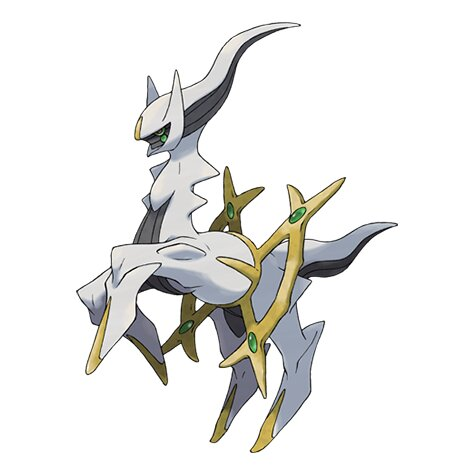

Arceus
It is described in mythology as the Pokémon that shaped the universe with its 1,000 arms.
Size:
10 feet, 6 inches (3.2 meters) tall and weighs 705.5 pounds (320.0 kilograms)
Type:
Normal Type
Original Region:
Sinnoh Region (Generation IV)
Description
Arceus is a Normal-type Mythical Pokémon introduced in Generation IV. Known as The Original One, it is revered as the literal creator deity of the lake guardians, the Sinnoh/Hisui region, and the entire Pokémon universe.
Appearances in Pokémon Games
Pokémon Diamond, Pearl, and Platinum (2006): Programmed into the fourth-generation games and accessible via the Hall of Origin, though the required event item (Azure Flute) was never officially distributed during the original run.
Pokémon HeartGold and SoulSilver (2009): Unlocks a special in-game event at the Sinjoh Ruins when Arceus is brought along, allowing players to receive a level 1 Dialga, Palkia, or Giratina.
Pokémon Brilliant Diamond and Shining Pearl (2021): Officially allowed players to legitimately obtain the Azure Flute and catch Arceus in the Hall of Origin for the first time by having saved data from Pokémon Legends: Arceus.
Pokémon Legends: Arceus (2022): Serves as the central narrative figure and final entity of the game, bestowing the player's celestial mission and appearing after the completion of the main quests and plate collection.